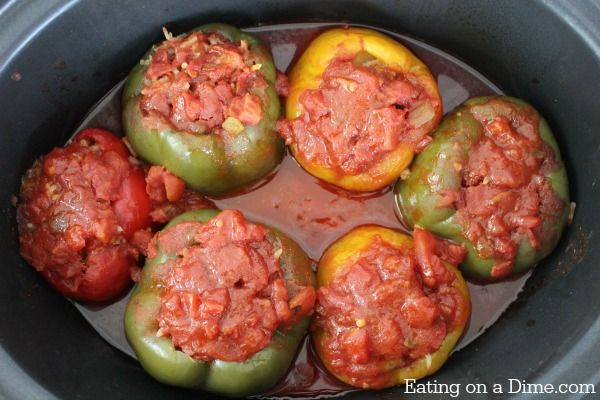

Stuffed Pepper Recipe
By: Samiisweets
January 18, 2022

Stuffed Pepper reference photo, taken by eatingonadime.com
My mom used to make stuffed peppers, and I always loved them. When I started weight watchers, I needed to find a healthier
version of this delicious recipe. I decided to swap out ground beef for ground chicken, but the beauty of this recipe is that
it's quite versatile. If you prefer ground beef, or white rice, feel free to customize as needed. Personally, I'm a fan of red/orange/yellow peppers
but feel free to use which ever peppers you like.
The other beautiful part of this recipe is the fact that you have a little bit of prep work, and then you get to stick them
into the crockpot and let the aroma fill your home while they slow cook for dinner. This is also a great recipe to meal prep
and portion into containers for the week ahead of time, or even freeze.
Lets Cook!
Ingredients
- 1 lb - Ground Chicken Breast (or your other favorite ground protein)
- 2 C - Brown Rice
- 2 TBSP - Minsced Garlic
- 2 TSP - Onion Power
- 4 - Fresh Peppers
- 28 OZ - Canned Tomato Sauce
- Cooking Spray
Steps
- Take a stovetop skillet, and spray pan with cooking spray to avoid ingredients from sticking. Add your garlic to the skillet, and
allow it to get hot. Once the garlic becomes arromatic, add your ground chicken to the skillet. Cook fully, and set aside.
- Cook your rice. I typically use frozen bags of rice, which just have to be microwaved, but you can also use traditional rice, or boil in the bag.
Fully cook rice before adding to your dish based on the instructions on the packaging.
- Cut and dispose of the tops of your peppers (similar to picture referenced above). Clean out all seeds, and wash peppers.
- In a large mixing bowl, add your ground chicken, rice, onion power, (and any additional spices you wish to add). Then add about 1/3 of the
tomato sauce to the mixture and stir to combine.
- Add 1/3 of the tomato sauce can to the bottom of your crockpot.
- Place your peppers standing up in crockpot on top of the tomato sauce, and split your chicken/rice mixture between the 4 peppers, and start filling them.
- Once your peppers are filled, top the peppers with the last 1/3 of your can of sauce.
- Turn your crockpot on either high or low. You can cook for 4 hours on high, or 6 hours on low.
- Serve the full pepper, and enjoy.